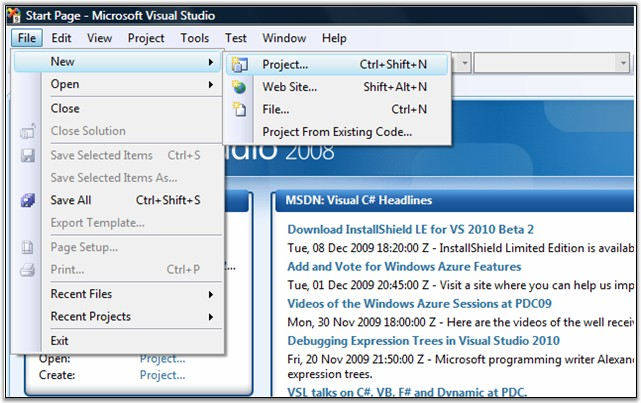
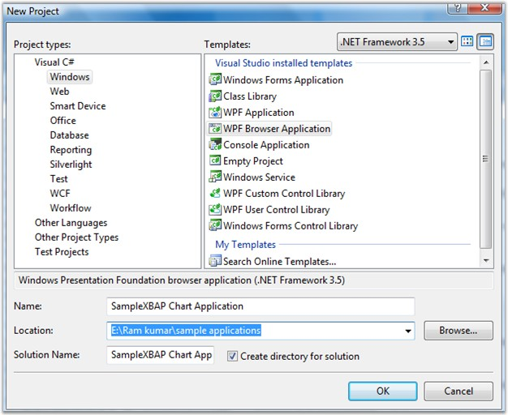
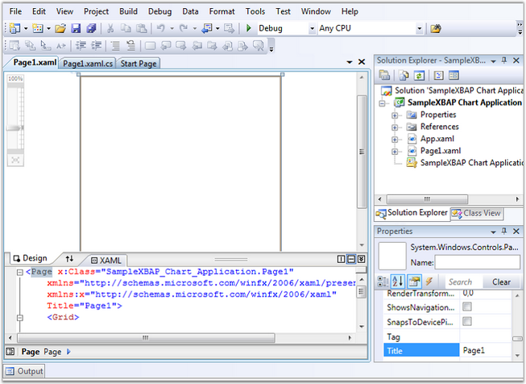
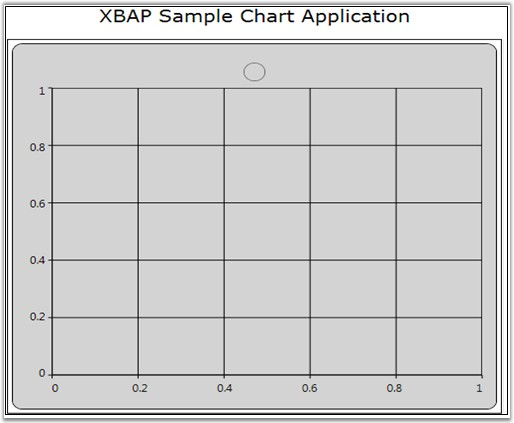
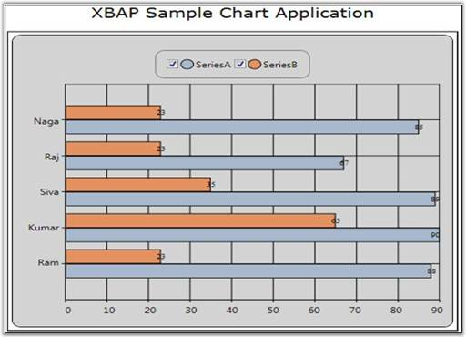
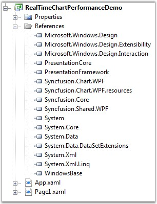

The following steps illustrate how to create a WPF Browser(XBAP) application and deploy Essential Chart in that application. It is described under the following sections:
· Creating a WPF Browser Application
· Deploying Essential Chart into the Application
Creating a WPF Browser Application
The following steps will guide you to create a simple WPF application:
1. Open Microsoft Visual Studio 2008. On the File menu of Visual Studio, click New -> Project. The following dialog is displayed.

Figure 39: Creating New Project
2. The following dialog will be displayed. Select Visual C# -> Windows -> WPF Browser Application as shown in the below image. Name your application, select the location for your project and then click OK.

Figure 40: Creating and naming a new project
A new WPF Browser application is created.

Figure 3: WPF XBAP Application
Deploying Essential Chart into the Application
1. In the Solution Explorer, add the following Assembly References
· Syncfusion.Chart.WPF
· Syncfusion.Shared.WPF
2. Add the following xml namespace schema to the xaml code page.
|
[XAML]
xmlns:sfchart="http://schemas.syncfusion.com/wpf" |
3. Draw the Grid to position the Chart and other controls as follows.
|
[XAML]
<Grid.RowDefinitions> <RowDefinition Height="Auto" MinHeight="55" /> <RowDefinition Height="Auto" MinHeight="55" /> <RowDefinition Height="416*" /> </Grid.RowDefinitions> <Grid.ColumnDefinitions> <ColumnDefinition Width="456*"/> </Grid.ColumnDefinitions> |
4. Use Syncfusion.Chart and Syncfusion.ChartArea to draw the Chart Area as follows.
|
[XAML]
<syncfusion:Chart Grid.Row="2" Name="Chart1" Margin="0,0,0,0"> <syncfusion:ChartArea IsContextMenuEnabled="False" ContextMenu="{x:Null}"> </syncfusion:ChartArea> </syncfusion:Chart> |
5. Use Syncfusion.ChartArea.Legend to draw the legend as follows.
|
[XAML]
<syncfusion:ChartArea.Legend> <syncfusion:ChartLegend Name="ChartLegend" IconVisibility="Visible" CheckBoxVisibility="Visible" Visibility="Visible"> </syncfusion:ChartLegend> </syncfusion:ChartArea.Legend> |
6. Run the application. The following chart will be generated.

Figure 41: XBAP Sample Chart with Chart Area, legend and Axes
7. Add Chart Series in the Chart Area as follows.
|
[XAML]
<syncfusion:ChartSeries Type="Bar" Label="SeriesA" BindingPathX="StudentName" BindingPathsY="Marks,Age,StudentID"> <syncfusion:ChartSeries.AdornmentsInfo> <syncfusion:ChartAdornmentInfo Visible="True" LabelContentPath="DataPoint.Y" /> </syncfusion:ChartSeries.AdornmentsInfo> </syncfusion:ChartSeries>
<syncfusion:ChartSeries Type="Bar" Label="SeriesB" BindingPathX="StudentName" BindingPathsY="StudentID,Age,Marks"> <syncfusion:ChartSeries.AdornmentsInfo> <syncfusion:ChartAdornmentInfo Visible="True" LabelContentPath="DataPoint.Y" /> </syncfusion:ChartSeries.AdornmentsInfo> </syncfusion:ChartSeries>
Input to the ChartSeries should be given as follows,
List<Student> stud = new List<Student>(); stud.Add(new Student(){StudentName="Ram",StudentID="23",Age=21,Marks=88}); stud.Add(new Student() { StudentName = "Kumar", StudentID = "65", Age = 22, Marks = 90 }); stud.Add(new Student() { StudentName = "Siva", StudentID = "35", Age = 23, Marks = 89 }); stud.Add(new Student() { StudentName = "Raj", StudentID = "23", Age = 21, Marks = 67 }); stud.Add(new Student() { StudentName = "Naga", StudentID = "23", Age = 21, Marks = 85 });
Chart1.Areas[0].Series[0].DataSource = stud; Chart1.Areas[0].Series[1].DataSource = stud; |
8. Input to the Chart Series should be given as follows.
|
[C#]
List<Student> stud = new List<Student>(); stud.Add(new Student(){StudentName="Ram",StudentID="23",Age=21,Marks=88}); stud.Add(new Student() { StudentName = "Kumar", StudentID = "65", Age = 22, Marks = 90 }); stud.Add(new Student() { StudentName = "Siva", StudentID = "35", Age = 23, Marks = 89 }); stud.Add(new Student() { StudentName = "Raj", StudentID = "23", Age = 21, Marks = 67 }); stud.Add(new Student() { StudentName = "Naga", StudentID = "23", Age = 21, Marks = 85 });
Chart1.Areas[0].Series[0].DataSource = stud; Chart1.Areas[0].Series[1].DataSource = stud; |

Figure 42: XBAP Sample Chart with Data
An XBAP application is created and Essential Chart for WPF is deployed in this application.
Deploying XBAP Samples
To deploy XBAP Samples add the following dlls in your project.
· Microsoft.Windows.Design.dll
· Microsoft.Windows.Design.Extensibility.dll
· Microsoft.Windows.Design.Interaction.dll

Figure 6: DLL for Deployment